1O que é o CaVeSal® Academy
O CaVeSal® Academy é o espaço de formação médica do ecossistema CaVeSal®. Reúne em um só lugar as guias do Prontuário Clínico e de Emergências Obstétricas, com uma busca comum, a bibliografia completa de cada app e acesso direto à literatura científica e às diretrizes oficiais.
- 179 guias do Prontuário Clínico, em 4 capítulos.
- 192 fichas de Emergências Obstétricas, em 16 abas.
- 8 buscadores de artigos científicos e 19 acessos a diretrizes oficiais.
- Tudo em espanhol, inglês e português.
2Quem pode entrar e como
O Academy está incluído sem custo adicional em qualquer versão full do CaVeSal®: Calculadora Pré-natal, Prontuário Clínico ou Emergências Obstétricas.
- Abra cavesal.app/academy.
- Se você já ativou uma versão full nesse dispositivo, entra diretamente.
- Se não, digite a chave de licença da sua Calculadora, Prontuário Clínico ou Emergências e toque em Entrar.
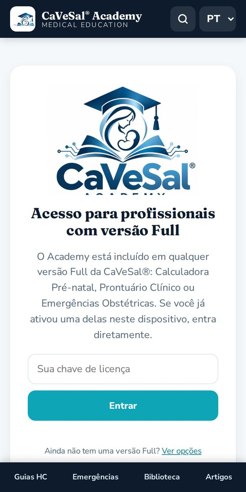
3Entrar a partir dos seus apps
O jeito mais prático é entrar a partir do app que você já usa. O Academy abre em uma janela separada e reconhece sua chave sozinho.
- Calculadora Pré-natal: botão Academy no cabeçalho e cartão em Sobre.
- Emergências Obstétricas: logo do Academy em Sobre e na guia.
- Prontuário Clínico: botão Academy do menu.
No topo aparece uma barra turquesa “← Voltar para…” com o nome do seu app. Toque nela para voltar aonde você estava.
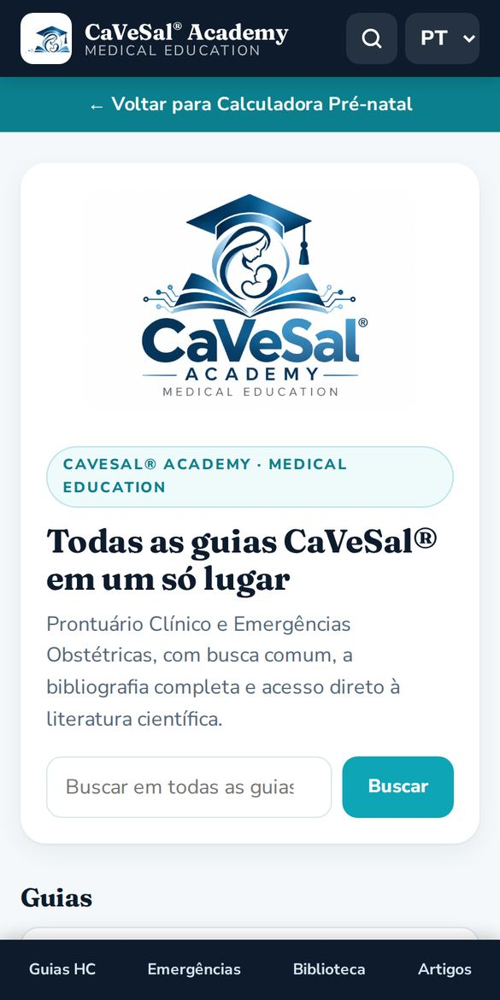
4Início, menu e idioma
No início há uma busca e cartões para cada seção. Embaixo, o menu fixo leva a Guias HC, Emergências, Biblioteca e Artigos de qualquer tela.
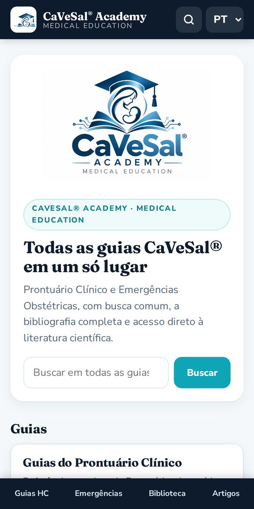
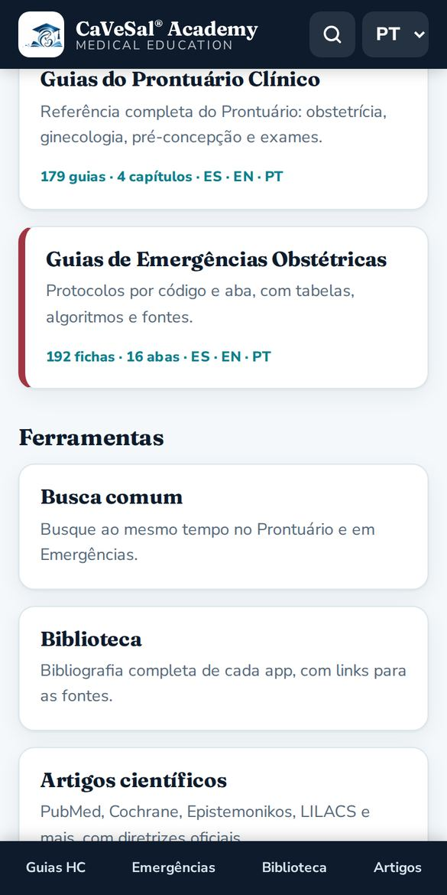
- No canto superior direito, a lupa abre a busca comum.
- O seletor ES · EN · PT muda o idioma de toda a interface e das guias. O Academy lembra sua escolha.
5Busca comum
Busca ao mesmo tempo em todas as guias do Prontuário Clínico e de Emergências.
- Digite um termo clínico (pelo menos 2 letras), por exemplo magnésio, HELLP ou Bishop.
- Filtre por Tudo, Prontuário Clínico ou Emergências Obstétricas.
- Toque em um resultado para abrir a guia. O termo aparece destacado.
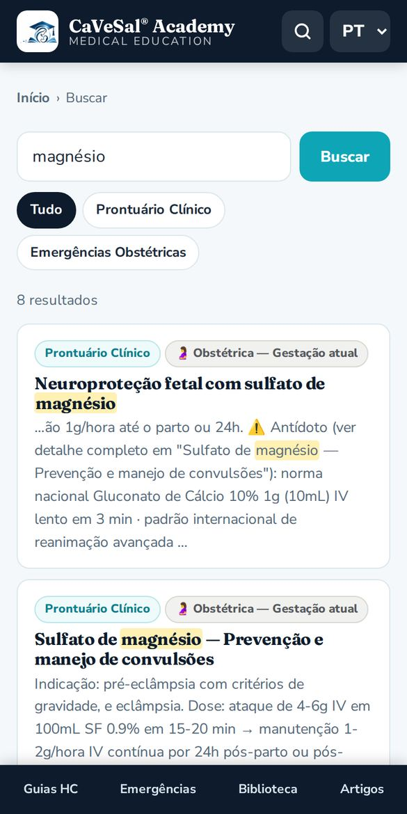
6Guias do Prontuário Clínico
São as mesmas guias do Prontuário Clínico, organizadas em 4 capítulos: Obstétrica, Ginecológica, Pré-concepcional e Fertilidade e Estudos.
- Escolha um capítulo.
- Toque em uma guia do índice ou use o seletor Ir para… para ir direto.
- Cada guia mostra sua fonte. No rodapé, Ver no app original abre o Prontuário Clínico.
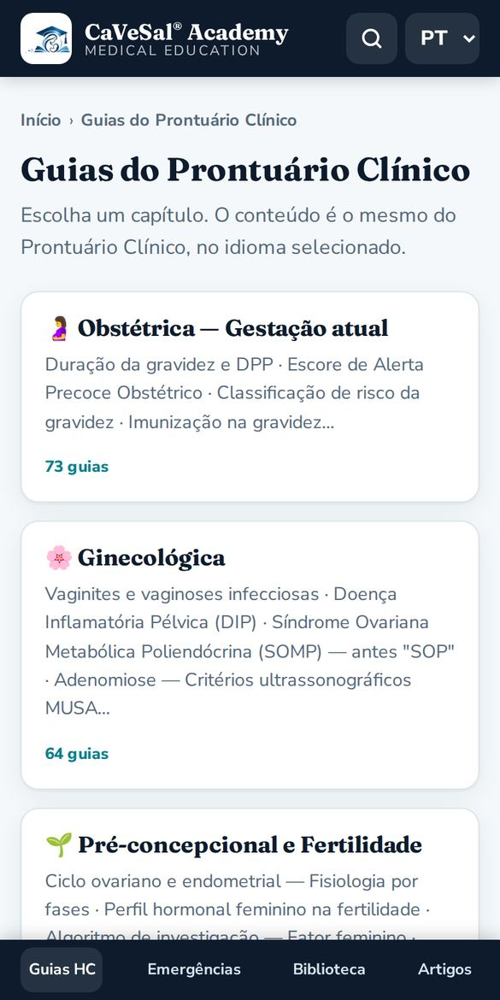
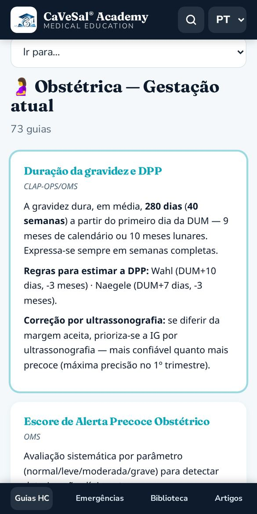
7Guias de Emergências Obstétricas
As 16 abas da guia de Emergências, cada uma com a cor do seu código: Código Vermelho (hemorragia), Código SHG — Hipertensão, Código Amarelo — Sepse, Código Azul Obstétrico, tromboprofilaxia, parto e mais.
- Escolha uma aba.
- Abra uma ficha do índice ou use Ir para….
- As fichas incluem tabelas, algoritmos e fontes.
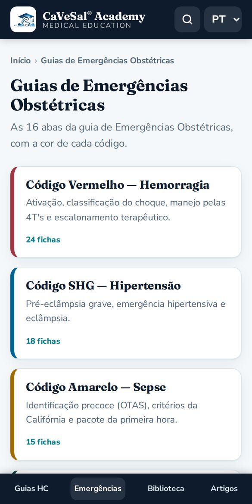
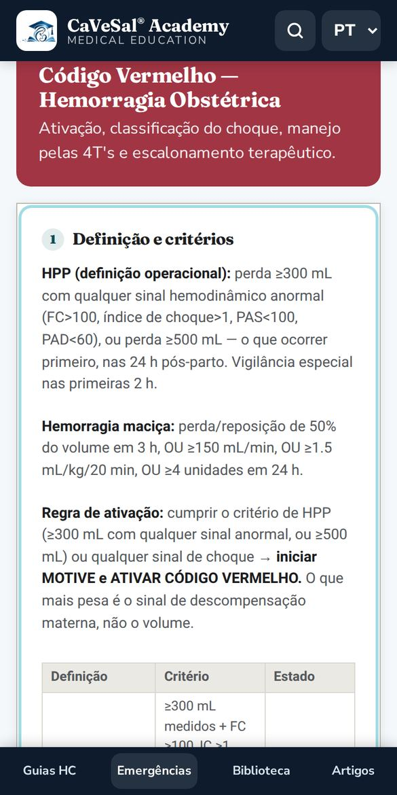
8Biblioteca
A bibliografia completa que sustenta cada app: fontes acadêmicas, diretrizes internacionais e normas, com links para cada fonte.
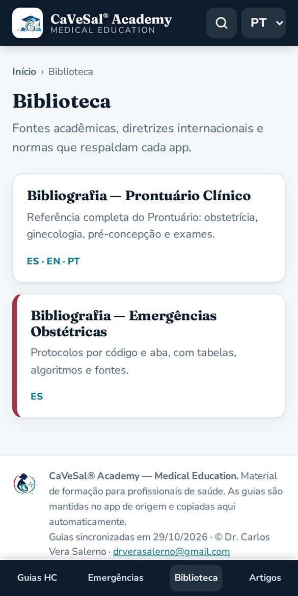
9Artigos científicos e diretrizes oficiais
Digite o tema uma única vez e escolha onde buscar. Cada buscador abre em uma nova aba.
- PubMed: literatura biomédica indexada (NLM / NIH).
- Cochrane Library: revisões sistemáticas.
- Epistemonikos: evidências de revisões sistemáticas.
- BVS / LILACS: literatura latino-americana (OPAS).
- Trip Database: diretrizes e evidências em uma só busca.
- Europe PMC: muito texto completo gratuito.
- Consensus: respostas baseadas em estudos.
- Google Acadêmico: artigos, teses, livros e citações.

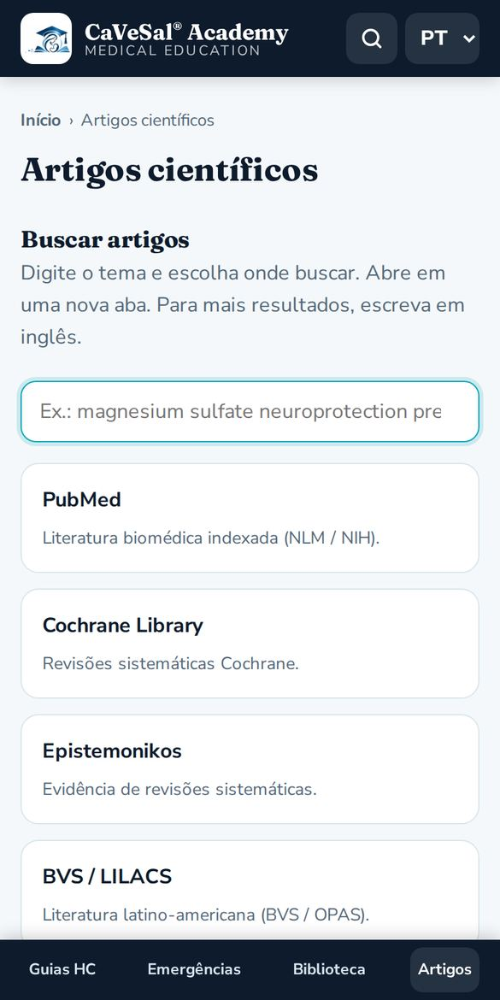
Mais abaixo, Diretrizes e fontes oficiais reúne acessos diretos agrupados em:
- Paraguai: MSPBS (Manual Nacional Pré-natal 2022, Patologias Obstétricas 2018, Código Vermelho 2022 e materiais), FPGO e sua revista.
- Organismos internacionais: OMS, IRIS da OMS, OPAS/CLAP, FIGO e CDC.
- Sociedades e diretrizes clínicas: NICE, ACOG, RCOG, SMFM e SOGC.
- Medicina fetal e ultrassonografia: ISUOG, Fetal Medicine Foundation e Medicina Fetal Barcelona.
10Instalar como app e usar sem internet
- Android: no Chrome, menu ⋮ → Instalar app ou Adicionar à tela inicial.
- iPhone / iPad: no Safari, botão Compartilhar → Adicionar à Tela de Início.
- PC: no Chrome ou Edge, ícone de instalar na barra de endereços.
As guias que você já abriu ficam salvas. Sem conexão, o Academy mostra a última cópia e avisa com uma faixa “Sem conexão”. Os buscadores de artigos e as diretrizes oficiais precisam de internet.
↑ Voltar ao índice11Perguntas frequentes
O Academy tem custo?
Não. Está incluído em qualquer versão full da Calculadora Pré-natal, do Prontuário Clínico ou de Emergências Obstétricas.
Minha chave não funciona.
Verifique se está completa e se já foi ativada no seu app. As chaves do CaVeSal® IA não servem para o Academy. Se o seu plano anual venceu, aparece o botão Renovar plano.
Com que frequência as guias são atualizadas?
Todos os dias são copiadas automaticamente do app de origem. A data da última sincronização aparece no rodapé do Academy.
Posso usar o Academy em inglês ou espanhol?
Sim. Escolha EN ou ES no canto superior direito: mudam a interface e as guias.
O Academy substitui o julgamento clínico?
Não. É material de formação para profissionais de saúde e não substitui o julgamento clínico nem as diretrizes locais.
Com quem falo?
Escreva para drverasalerno@gmail.com.
Manual atualizado: outubro de 2026